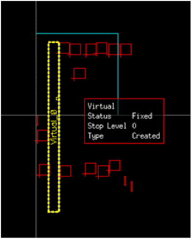

Viewing the Virtual Hierarchy Overrides
For designs that have individual virtual hierarchies set to different stop levels, types, placement status, and so on, you can view the individual virtual hierarchy overrides using the information balloon. You can customize the information balloon to selectively display measurements such as Placement Status, Stop Level, and Type, as displayed, when the cursor is hovered over a virtual hierarchy.

Related Topics
Dynamic Display Measurements for a Virtual Hierarchy
Virtual Hierarchy Display Controls
Return to top